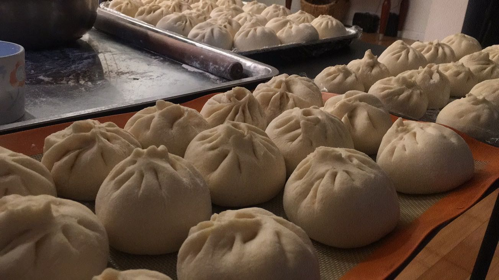
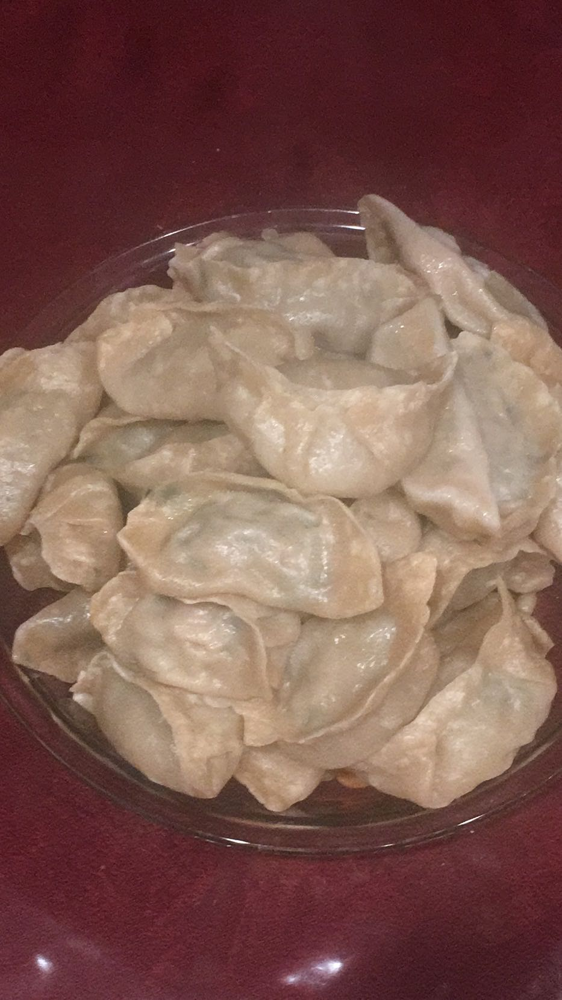
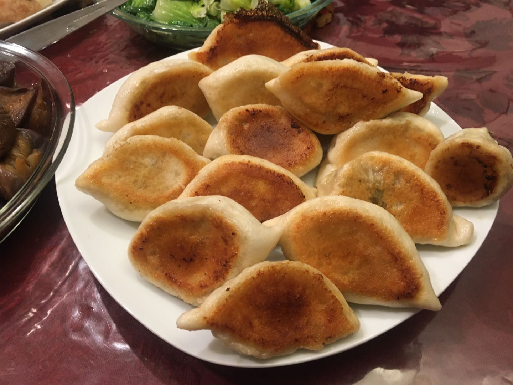

Xinyue's Recipes

- Add the yeast to the appropriate amount of warm water and mix well, add the yeast water and oil to the flour. Add 220 grams of water in portions and stir with chopsticks while adding. Until there is no dry powder, it is flocculent.
- Knead into a smooth dough, cover with plastic wrap, and ferment at room temperature for about 40 minutes. The fermented dough was taken out, kneaded, and divided into small pieces. I made 16 buns for this little bun skin.
- Stuffing method: chopped half-fat lean meat, I directly use a blender to stir. Add 100 grams of water to the minced meat three times. Stir until the meat has completely absorbed the water. Add light soy sauce, cooking wine, oyster sauce and bean paste and stir well.
- Put a small piece of oil paper under the wrapped buns, put them in a steamer, and let them wake up for 15 minutes. After the water is boiled, steam for 15 minutes. After turning off the heat, wait 3-5 minutes before opening the lid.
- Steam for 20 minutes.

- Chop pork into stuffing, add soy sauce, refined salt and mix well, then add pepper noodles, lard, add water and stir in one direction until it is evenly mixed, wash and chop the vegetables, squeeze the water, and place in the meat stuffing Add monosodium glutamate, green onion, minced ginger, and sesame oil, mix well to form a filling.
- Put the fine powder on the chopping board and scald it with boiling water, mix it into a snowflake shape, knead it into a dough, knead it evenly and knead it into a long strip, lay it down into 50 doses, sprinkle some dry noodles, flatten it, and roll it into a round thin crust.
- Hold the skin in your left hand, smear the stuffing in your right hand, and then use your hand to align the edges of the dumpling skin and knead it together from right to left to make a crescent-shaped dumpling.
- Steam them for about 10 minutes.

- Prepare some forzen dumplings.
- Put a small amount of oil in the pan (as long as it spreads evenly on the bottom of the pan), turn on the heat.
- Place the dumplings in the pot (do not need to defrost, put them directly).
- Fry on medium heat for a minute or two, until you hear a sizzling sound, the bottom of the dumplings starts to turn golden brown.
- At this time, pour half a bowl of water, the amount of water is about one-third of the dumplings.Cover the lid and cook on medium heat for about five minutes.
- Taking advantage of this gap, use flour and water to make a thin flour and water at a ratio of about 1:10.
When there is a sizzling noise in the pot, it is getting louder and louder. At this time, the water in the pot is almost dry. Open the lid and pour the diluted flour and water evenly into the pot (if you want to sprinkle sesame and green onion, sprinkle it at this time Into), turn to low heat and fry until the water in the pan is dry, the flour and water will form a crisp film on the bottom of the pan, then turn off the fire.
- Done!